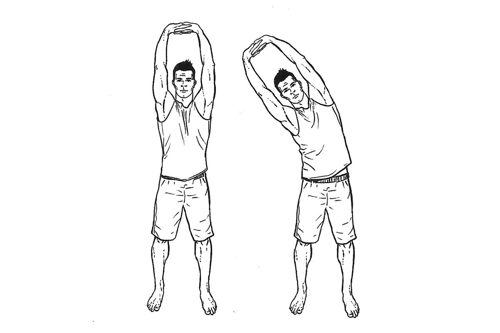
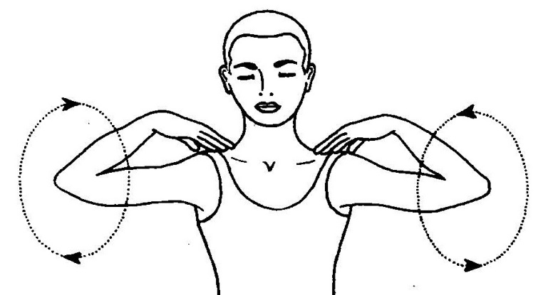
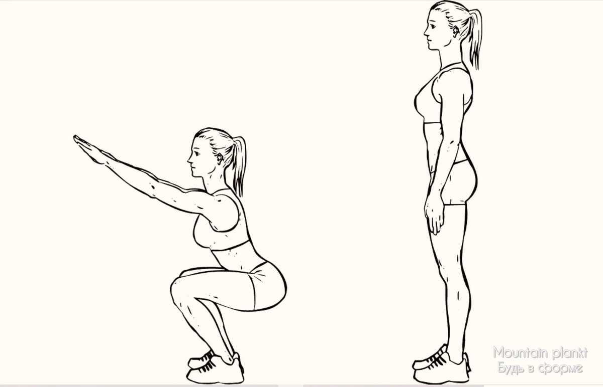
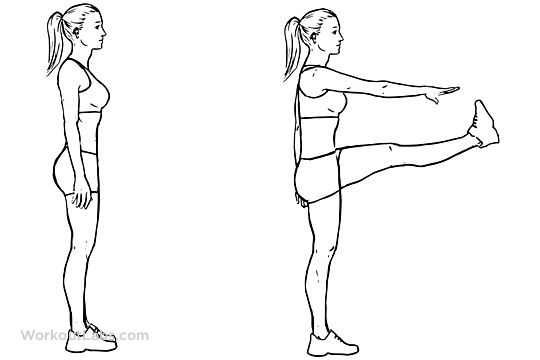
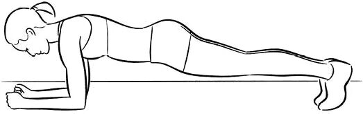
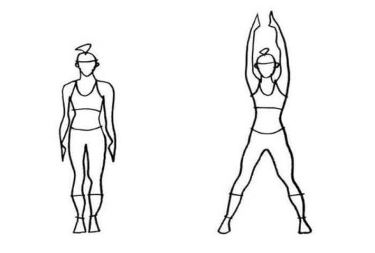

Дает заряд бодрости
Легкая утренняя зарядка
Основные преимущества утренней зарядки
1.Быстрое пробуждение и бодрость
После сна организму нужно 1–2 часа, чтобы запустить все физиологические процессы.
Зарядка ускоряет этот процесс: активизирует нервную систему и органы чувств (зрительный, слуховой, вестибулярный анализаторы), помогает избавиться от сонливости и повышает работоспособность.
2.Улучшение кровообращения
Физические упражнения усиливают ток крови, в т.ч. в венах. Органы и ткани получают больше кислорода и питательных веществ — это даёт ощущение прилива сил.
3.Активация обмена веществ
Зарядка «запускает» метаболизм после ночного замедления. Регулярные занятия могут способствовать снижению веса: через месяц можно заметить уменьшение массы тела на 2–3 кг.
4.Укрепление сердечно‑сосудистой и дыхательной систем
Умеренная нагрузка оптимизирует работу сердца и лёгких, тренирует сердечную мышцу, нормализует давление. Это служит профилактикой атеросклероза и других заболеваний.
Упражнения:
Потягивания стоя.
Круги плечами и разминка шеи.
Полуприседы.
Махи руками и ногами.
Планка
Прыжки или шаги на месте.
УПРАЖНЕНИЕ 1
Потягивания стоя

1.Встаньте прямо, ноги на ширине плеч.
2.Вытяните руки вверх, можно переплести пальцы.
3.Наклонятесь корупом в правый и левый бок поочередно 10-12 раз
УПРАЖНЕНИЕ 2
Круги плечами и разминка шеи.

1.Плавными движениями от поворачивайте голову вокруг оси вашей головы.
2.Сделайте 4 круговых движения влево, затем меняйте напрявление.
3.Повторите так 3-4 раза
Теперь плечи

1.Встаньте прямо, ноги на ширине плеч, колени слегка согнуты.
2.На вдохе начните выполнять плавные круговые движения плечами вперёд — по направлению к ушам, затем назад и вниз.
Руки остаются расслабленными, движение происходит только в плечевых суставах. Сохраняйте амплитуду, не поднимая плечи слишком высоко к ушам.
3.На выдохе измените направление: вращайте плечами назад — от ушей вниз, затем вперёд и вверх. Контролируйте напряжение, избегая резких движений и перенапряжения в шее.
УПРАЖНЕНИЕ 3
Полуприседы

1.Встаньте прямо, ноги на ширине плеч, стопы слегка развёрнуты наружу (примерно на 30–40 градусов).
Руки можно держать перед собой для равновесия или на поясе.
2.Напрягите мышцы кора, удерживая спину прямой.
3.На вдохе начните медленно сгибать колени, опускать таз вниз и отводить его назад, как будто собираетесь сесть на стул.
Убедитесь, что колени не выходят за линию носка, а остаются над стопами.
4.На выдохе аккуратно поднимайтесь, выпрямляя ноги и возвращаясь в исходное положение.
Сделайте 12-18 раз
УПРАЖНЕНИЕ 4
Махи руками и ногами

1.Широкая стойка, руки прямые.
2.Выполняйте махи руками вперёд.
2.Левую руку к правой ноге и наобарот.
Выполняйте 10-12 раз
УПРАЖНЕНИЕ 5
Планка

1.Принять положение упора лёжа, упереться предплечьями или ладонями в пол, локти/ладони должны находиться строго под плечами.
2.Ноги поставить на носки.
3.Тело должно быть вытянуто в линию от головы до пяток.
4.Втянуть живот, напрячь пресс, будто пытаются подтянуть пупок к позвоночнику.
5.Зафиксировать положение, смотреть прямо перед собой, чтобы не перегружать шею.
6.Дышать ровно и спокойно.
7.Стараться удержать планку как можно дольше.
УПРАЖНЕНИЕ 6
Прыжки на месте

1.Встать в положение "Х"
2.При прыжке опустить руки, затем при следущем прыжке руки поднять.
3.Соблюдать равновесие дыхания
4.Повторить 10-15 раз